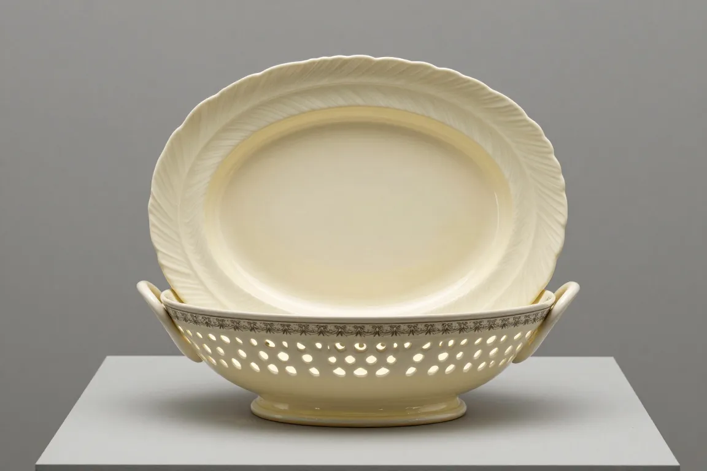

Кремовая гончарная посуда со свинцовой глазурью: лёгкая, дешёвая и прочная. Гончары Стаффордшира и Лидса делали простые классические формы с краем «перо» или ажурной резьбой и продавали их на каждый стол Европы.

Главная идея
Лёгкий кремовый черепок и прозрачная глазурь в простой классической форме продаются лучше фарфора и дельфтского фаянса, потому что весь сервиз дёшев, ровен и легко пополняется.
Принципы дизайна
Обжигайте черепок из кремня и белой глины до кремовой гончарной массы при 1100 °C.
Окунайте вещь в прозрачную свинцовую глазурь, дающую бледно-жёлтый кремовый блеск.
Держите форму простой и уравновешенной: круг, прямой борт, ручка-петля.
Прессуйте или формуйте край с пером или раковиной, регулярным узором тонких линий.
Прорезайте стенку пробойником для ажурных корзин, рядами мелких отверстий шириной 3–4 мм.
Печатайте или пишите узор узкой полосой, а большую часть поверхности оставляйте простой.
Делайте сервиз из 50 и более форм, чтобы покупатель мог докупить любую вещь.
Антипаттерны
Белая непрозрачная оловянная глазурь на палевом черепке